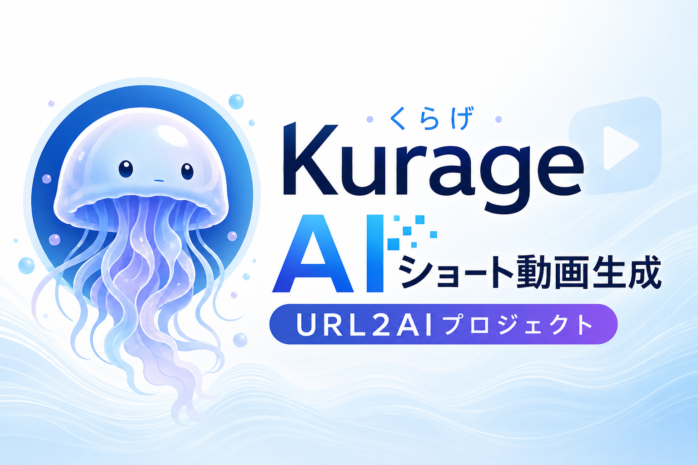

音楽ファイルから、歌詞字幕付きMVを生成する。
AIRadio Scripted-MVは、MP3をアップロードして、歌詞抽出、映像脚本生成、画像生成、HyperFramesによるMV生成までを一連の流れで実行するシステムです。
生成後は、歌詞やタイトルを画面上で修正し、その内容を反映したMP4を再生成できます。Whisperモデルを変更して、元のMP3から再解析することもできます。
Kurageから派生したAIRadio Scripted-MV
このシステムは、X投稿からショート動画を生成するKurageプロジェクトを土台にしています。Kurageで作ってきた、ジョブ管理、画像生成、動画生成、一覧表示、リール表示の仕組みを活かし、音楽ファイルを起点にしたMV生成へ発展させました。
既存のAI Radio Scripted MVを、歌詞抽出、歌詞修正、タイトル修正、モデル再解析、公開用一覧、リール表示まで扱える形にバージョンアップしています。

元になったKurageプロジェクト
Kurageは、X投稿をもとにAIショート動画を生成する別リポジトリのプロジェクトです。AIRadio Scripted-MVは、その開発で得た動画生成パイプラインを音楽MV生成に応用した派生プロジェクトです。
主な機能
歌詞抽出
Demucsでボーカルを分離し、faster-whisperでSRT、LRC、TXTを生成します。tiny、base、small、medium、large-v3を選択できます。
モデル変更再解析
生成済みジョブでも、元MP3からモデルを変えて再解析できます。歌詞、画像、MP4は同じジョブIDで更新されます。
歌詞とタイトル修正
生成後にLRC歌詞とタイトルを編集し、修正内容を反映したMP4を再生成できます。
脚本・画像生成
歌詞の雰囲気から映像脚本と画像プロンプトを作り、縦型MV用の背景画像を生成します。
動画生成
HyperFramesで元音源をそのまま使い、歌詞字幕付きの縦型MP4を生成します。
一覧・リール表示
公開済みMVを一覧表示し、詳細再生やリール形式で連続視聴できます。一覧サムネイルは1秒地点を表示します。